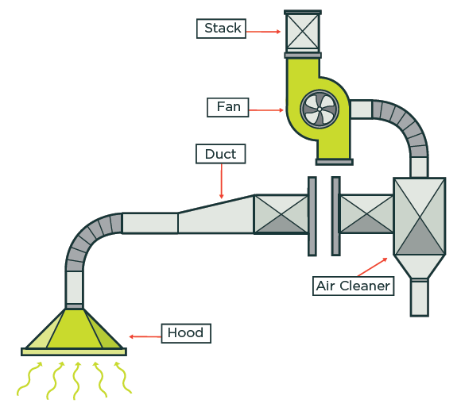
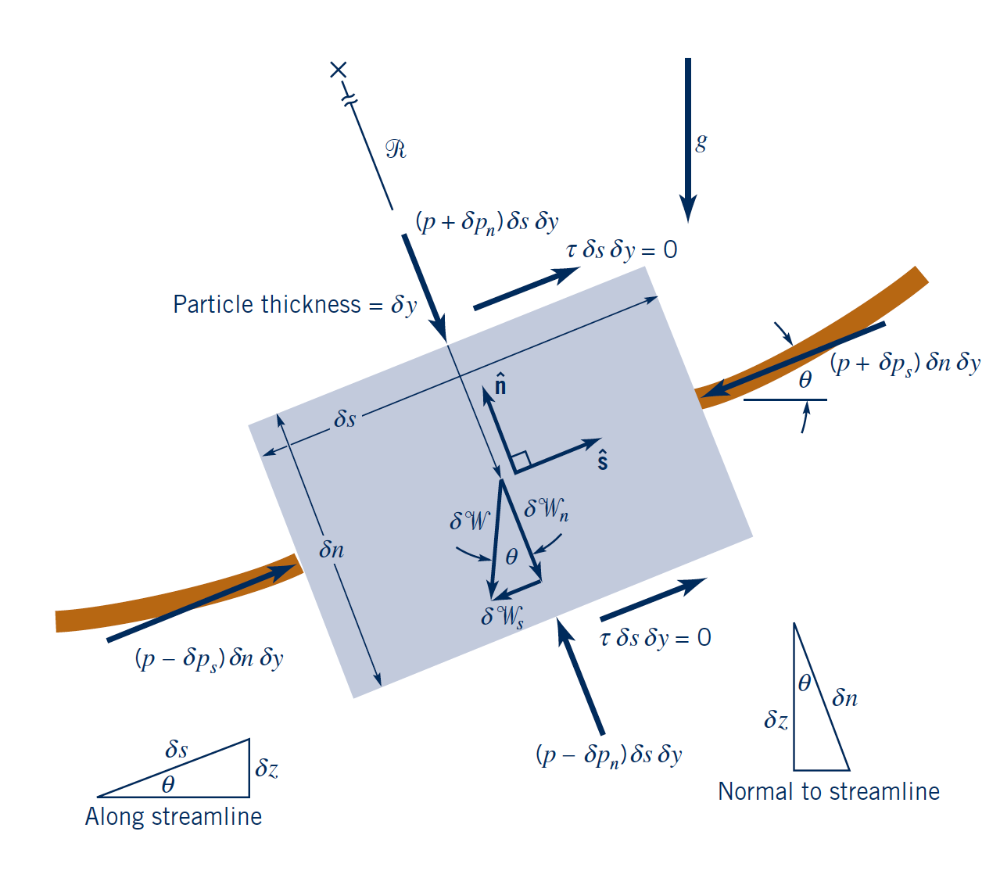
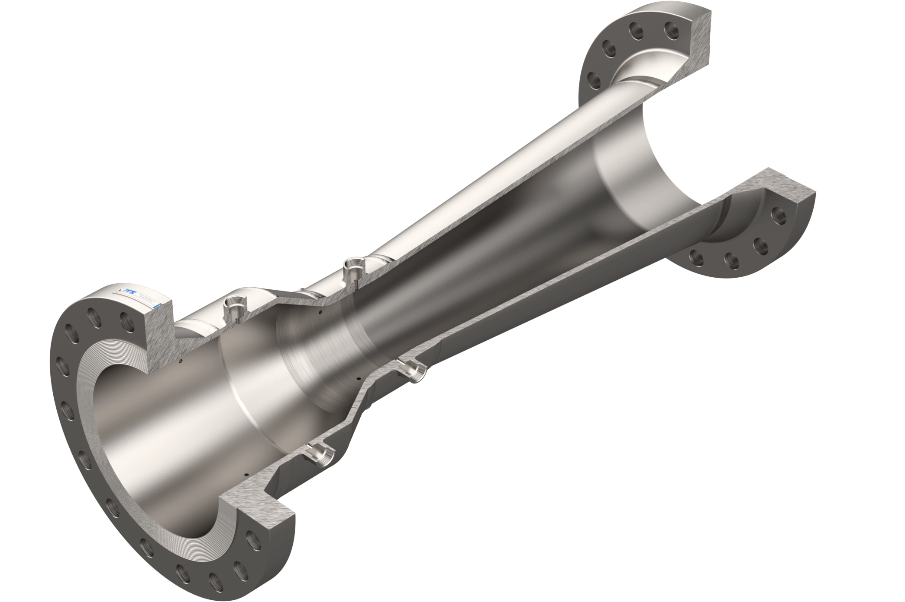
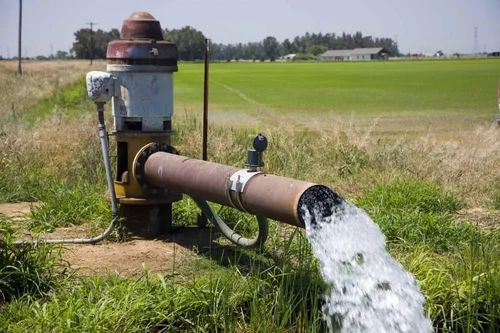

Bernoulli’s principle relates pressure, velocity, and elevation in a flowing fluid.
It applies to steady, incompressible, inviscid flow along a streamline.

Apply Newton's Second Law on the fluid particle:
$$\sum \delta F_s = \delta m a_s $$
Along a streamline (only tangential direction s):
$$a_s = \frac{dV}{dt} = \frac{\partial V}{\partial s}\frac{ds}{dt}=V\frac{\partial V}{\partial s}$$
Steady: not time derivative and streamline/pathline coincide (fluid particles stay in the streamline).
Inviscid (frictionless): only gravity and pressure forces.
Gravity: $$\delta W_s = - \gamma \delta \forall sin \theta$$
Pressure: $$\delta F_{ps} = -\frac{\partial p}{\partial s} \delta \forall$$
from pressure at either ends of the fluid volumes: $$\delta F_{ps} = (p-\delta p_s) \delta n \delta y - (p+\delta p_s) \delta n \delta y =-2 \delta p_s \delta n \delta y$$
and using first order Tyalor expansion \( \left( \delta p_s \approx \frac{\partial p}{\partial s} \frac{\delta s}{2} \right) \)
Adding all the force contributions:
$$\sum \delta F_s = \delta F_{ps} + \delta W_s = \left( -\gamma sin \theta - \frac{\partial p}{\partial s} \right) \delta \forall$$
which gives: $$-\gamma sin \theta - \frac{\partial p}{\partial s} = \rho V \frac{\partial V}{\partial s}$$
along a streamline \( dn=0 \rightarrow p(s,n) = p(s) \rightarrow \frac{\partial p}{\partial s} = \frac{d p}{d s}\)
and \( sin \theta = \frac{dz}{ds} \)
Integrating along the streamline and assuming incompressible flow (constant \( \rho \) ) to simplify the pressure integral.
p/ρ + V²/2 + gz = constant
H = z + p/γ + V²/(2g)
Represents static pressure energy.
Represents kinetic energy per unit weight.
Represents potential energy per unit weight.
If the flow is ideal, the total head remains constant.
When velocity increases, pressure tends to decrease.
This is the basis for many engineering devices and flow measurements.


Bernoulli is a very powerful approximation, but real-world systems often need corrections for friction, compressibility, and unsteadiness.
Bernoulli’s equation is derived from conservation of energy for an inviscid, steady, incompressible flow.
It is widely used in hydraulics, aerodynamics, and flow measurement.
Its main limitations are viscosity, compressibility, unsteadiness, and rotational effects.